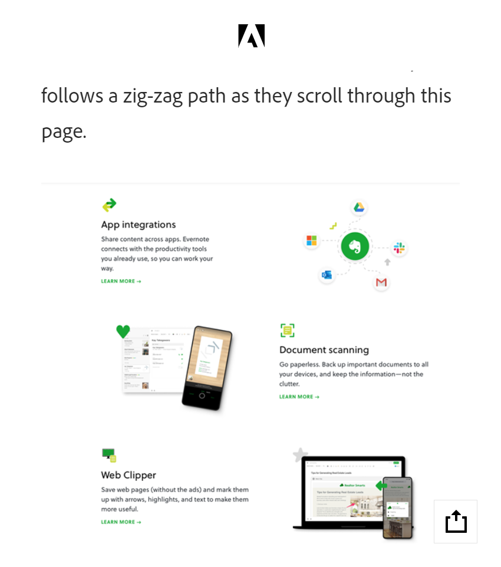
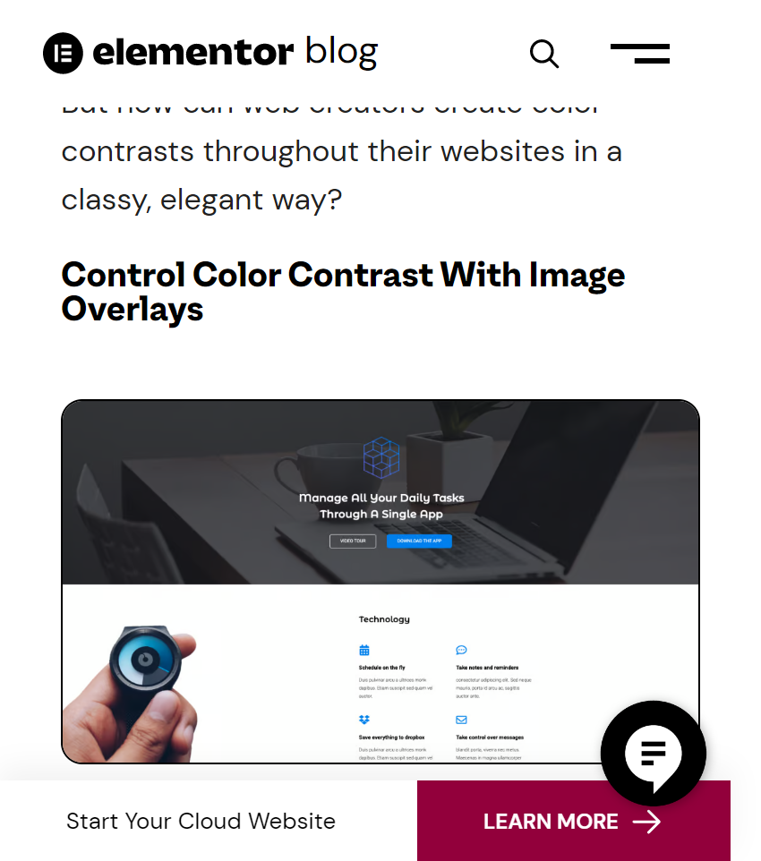
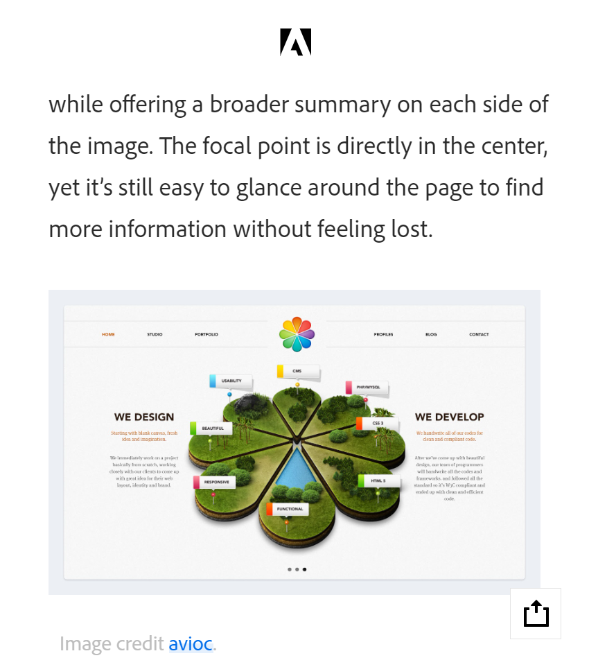

Proximity
XD Ideas
xd.adobe.com How do people decide whether certain elements are part of a larger group or not? They look at objects, and if objects are located close to one another, they see them as a unit. Take a look at the image above. You will likely see two groups of elements rather than eighteen individual objects. All objects are identical, and the only thing differentiating them is the white space that separates them. People follow the same approach when they interact with both physical and digital products. For example, when we examine a web page or mobile screen, we usually see it as a composition of objects rather than individual objects. This perception offers user interface (UI) designers an excellent opportunity—as it is possible to group objects together that share similar functionality or properties.
Contrast
Elementor Blog
elementor.com Contrast is the relationship between two or more design elements whose dramatic differences are emphasized when both elements are shown together. The degree of contrast between these elements is disproportionate to their level of similarity: the less similar two items are, the greater the contrast between them. The most effective way to use contrast in web design is by familiarizing yourself with the many types of contrast that can exist. Once you have covered this baseline, you can intuitively apply sophisticated forms of contrast to your designs.
Visual Hierarchy
XD Ideas
xd.adobe.com Visual Hierarchy is used to rank design elements and influence in the order you want your users to view them. By using principles like contrast, scale, balance and, more, you can help establish each element in its rightful place and help the most important elements stand out. Pictured above, Avioc utilizes symmetry on its homepage to bring focus to their key strengths while offering a broader summary on each side of the image. The focal point is directly in the center, yet it is still easy to glance around the page to find more information without feeling lost.